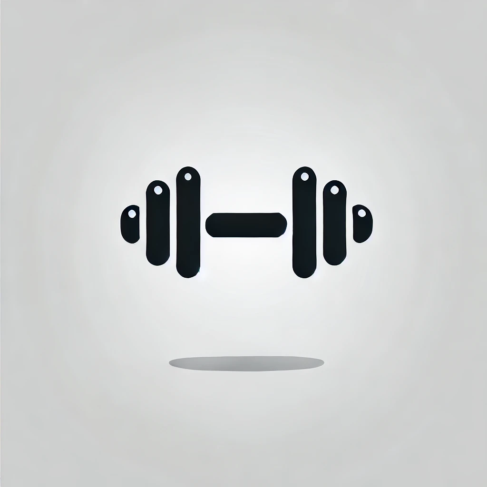

Overview
Purpose
The purpose of this website is to provide structured workout routines, fitness advice, and nutrition tips. It is designed to help individuals of all fitness levels create a sustainable and effective workout plan that fits their lifestyle. Whether someone is a complete beginner, returning to fitness, or looking for expert-level training, the site will provide the necessary tools to achieve their fitness goals.
The website will feature video tutorials, workout plans, nutrition guidelines, and progress-tracking strategies to make fitness more accessible. Users will also find motivational content, expert fitness coaching insights, and a supportive community to stay engaged with their health journey.
Our mission is to simplify fitness for busy professionals, students, and anyone looking to adopt a healthier lifestyle. Through structured content, we aim to empower individuals to take control of their physical well-being and achieve long-term success.
Audience
This website is designed for a broad audience, including beginners, college students, and busy professionals looking for simple and effective fitness guidance.
Beginners Those who have little to no experience in fitness and need step-by-step guidance to start a workout routine, understand proper form, and set achievable goals.
College Students Young adults who want to stay active despite their tight schedules. They need workouts that fit into their lifestyle, requiring minimal equipment and short durations.
Busy Professionals Working individuals who struggle to balance fitness with their careers. The site offers time-efficient workouts and meal prep ideas to help them stay in shape despite their demanding routines.
Branding
Website Logo
Style Guide
Color Palette
| Primary | Secondary | Accent 1 | Accent 2 |
|---|---|---|---|
Typography
Heading Font: Montserrat
Paragraph Font: Roboto
Navigation
Site Map
Content
Home Page
Welcome to Fitness Training, your go-to resource for expert-backed fitness programs, workout guides, and nutrition advice. Whether you are looking to build muscle, improve endurance, lose weight, or simply stay active, we provide customized fitness plans that fit your lifestyle.
Staying consistent in your fitness journey requires the right knowledge, motivation, and structure. Our website is designed to eliminate the guesswork in fitness by offering clear, step-by-step workout guides and expert-backed training plans.
A well-rounded fitness journey is about more than just exercise. It’s about understanding the connection between physical training, nutrition, and mental discipline. Our platform takes a holistic approach to fitness, ensuring that you have access to all the tools and resources necessary for long-term success.
Whether you have 30 minutes a day or a couple of hours, our structured programs will fit into your schedule. You can customize your training plan, track progress, and make adjustments along the way. Each workout is designed with flexibility in mind so that regardless of your fitness level or access to equipment, you can follow along and see results.
The journey to a healthier lifestyle does not have to be complicated. Our platform breaks down fitness into simple, achievable steps, allowing you to focus on your goals with confidence. Our goal is to help you stay motivated, eliminate confusion, and make fitness an enjoyable and sustainable part of your life.
- Structured workout routines for all fitness levels
- Expert advice on exercise techniques
- Meal plans and nutrition tips for optimal performance
- Motivation and guidance to help you stay on track
- Personalized fitness plans to fit your unique goals
- Interactive progress tracking and performance monitoring
- Tips on preventing injuries and staying consistent
Images for the Home Page


Workout Plans
Our Workout Plans section provides detailed programs designed for various fitness goals. Whether you are a beginner or an advanced lifter, you will find a program that fits your needs.
- Strength Training: Focus on resistance-based exercises to build muscle and increase endurance.
- Endurance Workouts: Cardio-based routines that help improve stamina and cardiovascular health.
- Flexibility & Mobility: Programs that emphasize stretching, yoga, and injury prevention.
- High-Intensity Interval Training (HIIT): Short, intense workouts designed to burn fat and increase metabolism.
- Home & Gym Workouts: Custom workouts tailored to your equipment availability.
- Full-Body Workouts: Sessions that target multiple muscle groups for maximum efficiency.
- Split Training: Plans that focus on specific muscle groups each day for optimized muscle growth.
Each of our workout programs comes with detailed explanations, video tutorials, and modifications based on fitness levels. Whether you prefer lifting weights, bodyweight exercises, or a mix of both, we offer something that caters to your specific goals.
For beginners, our introduction to strength training covers everything from basic movement patterns to proper form. This will ensure that you develop a strong foundation before progressing to heavier lifts or advanced movements.
If weight loss and endurance are your primary focus, our endurance-based programs incorporate running, cycling, jump rope routines, and bodyweight circuits designed to enhance cardiovascular performance while burning calories.
Images for Workout Plans

Nutrition and Recovery
Achieving fitness goals is not just about working out – proper nutrition and recovery play a crucial role. This section provides in-depth meal planning guides, hydration strategies, and supplementation recommendations.
- Meal plans tailored for muscle gain, fat loss, and maintenance.
- Hydration and nutrient timing strategies to enhance performance.
- Post-workout recovery techniques, including foam rolling and stretching routines.
- Tips for optimizing sleep to maximize muscle growth and fat loss.
- Supplement recommendations for improved energy, muscle recovery, and fat loss.
- Balanced macronutrient strategies for optimal energy levels.
- Essential vitamins and minerals required for peak performance.
Proper nutrition fuels your workouts and helps you recover efficiently. We offer meal plans designed to suit different dietary preferences, whether you follow a high-protein diet, low-carb approach, or plant-based eating.
In addition to meal planning, we provide insight into hydration strategies. Many fitness enthusiasts underestimate the importance of water intake in optimizing performance and recovery. Our hydration tips ensure that you stay energized and avoid common dehydration-related setbacks.
Recovery is an essential aspect of training. If you don’t give your muscles time to rebuild, your progress will stall. We offer evidence-based techniques to accelerate recovery, including foam rolling, active stretching, and sleep optimization strategies.
For those who want to take their performance to the next level, we also dive into the world of supplementation. We provide unbiased recommendations on pre-workout formulas, post-workout recovery drinks, and protein sources to help you get the most out of your efforts.
Images for Nutrition and Recovery

Wireframes
Three wireframes for your site, one for each page
Home

Workout Plans
Nutrition and Recovery